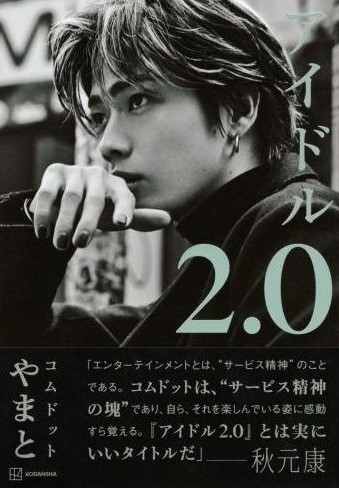

僕は読む以前、好きなYouTubeの本として手に取りましたが、実際に読んでみると、やまとさんが考えている経営論やブランディング論などについて深く書かれていました。
ここ数年でYouTuberという職業が確立されてきたが、その数年の中でも、大人気であった クリエイターの人気が低迷したりする厳しい世界だと改めて感じることが出来る一冊であった。

この本を読んで感じることが出来るのはyoutuberという職業の奥の深さ です。人の動向に気を配り、確立された戦略を立てる。この緻密な戦略を1つ1つ見 ていくのがとても興味深かったです。よくあるマーケティング論やブランディング 論とは違った、自らの経験を踏まえた計画が書かれており、その結果まで知ることが出来る。
この本を読んで感じることが出来るのはyoutuberという職業の奥の深 さ です。人の動向に気を配り、確立された戦略を立てる。この緻密な戦略を1つ1 つ見 ていくのがとても興味深かったです。よくあるマーケティング論やブランデ ィング 論とは違った、自らの経験を踏まえた計画が書かれており、その結果まで 知ることが出来る。
素晴らしかったです。素晴らしかったです。素晴らしかった です。
素晴らしかったです。素晴らしかったです。素晴らしかった です。素晴らしかったです。素晴らしかったです。
素晴らしかったです。素晴らしかったです。素晴らしかった です。素晴らしかったです。素晴らしかったです。